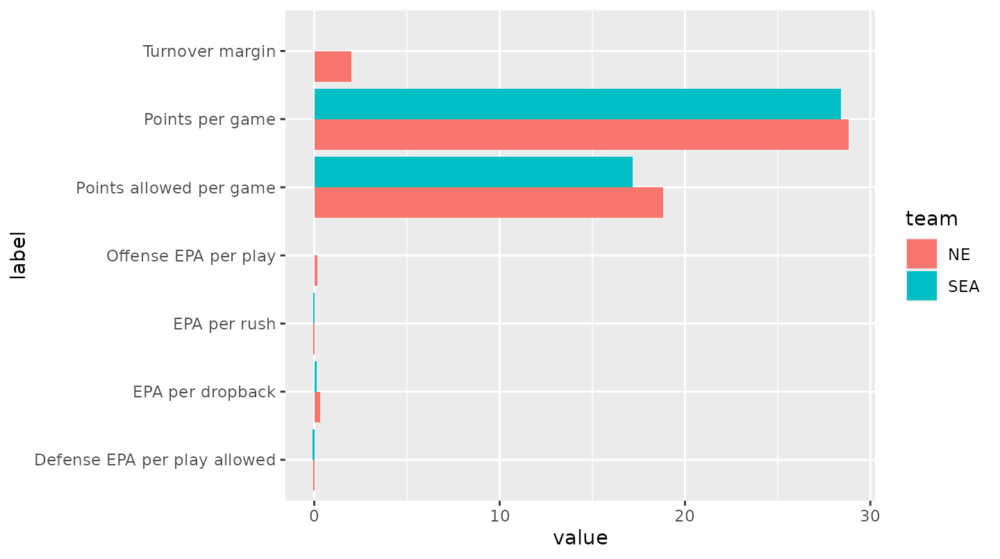
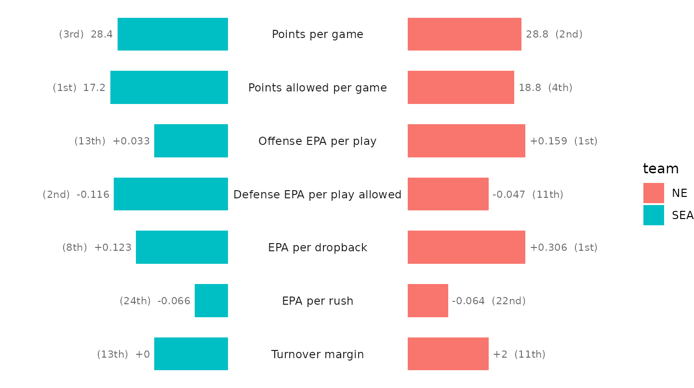
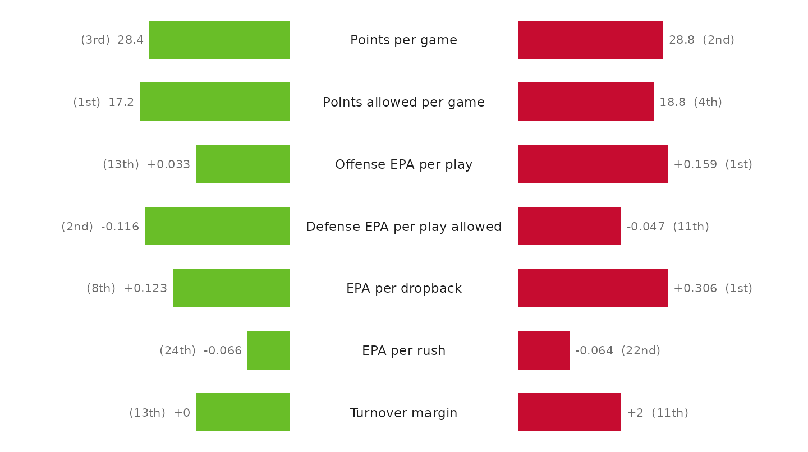
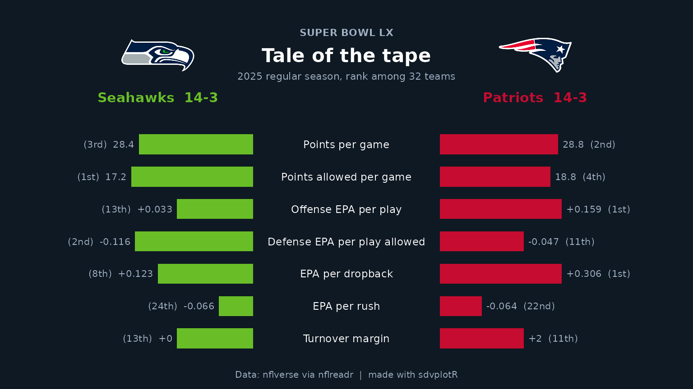
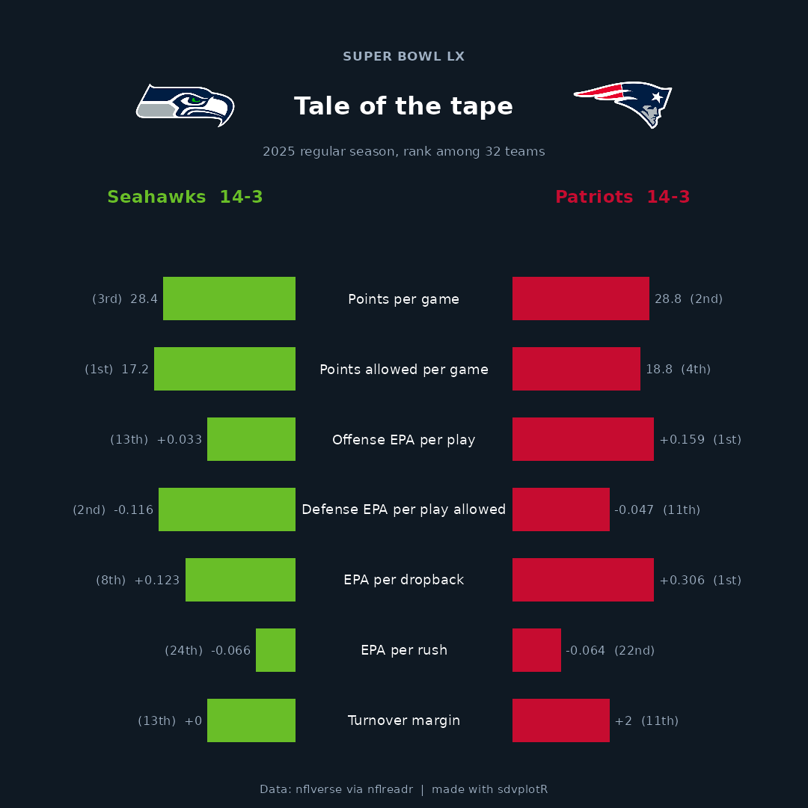

Head-to-Head Card
Source:vignettes/articles/recipe-head-to-head-card.Rmd
recipe-head-to-head-card.RmdOn this page
The brief: Super Bowl week. The social team wants a “tale of the tape” card for the two teams: their regular seasons side by side, in each team’s colors, with logos, at 1200 x 675 for X and 1080 x 1080 for Instagram. The numbers come from nflverse play-by-play and schedules through nflreadr.
library(sdvplotR)
library(ggplot2)
library(dplyr, warn.conflicts = FALSE)
season <- 2025
out_dir <- tempfile("sdvplotR-recipe-") # where the exports go; use your own folder
dir.create(out_dir)1. Get the data
Every stat is computed for all 32 teams, not just the two finalists, because a comparison needs context: each one also gets a league rank (1 is best, whichever direction “best” is for that stat). Points come from the schedule, efficiency and turnovers from the play-by-play.
schedule <- nflreadr::load_schedules(season)
sb <- filter(schedule, game_type == "SB")
pair <- c(sb$away_team, sb$home_team) # left and right on the card
scoring <- schedule |>
filter(game_type == "REG") |>
nflreadr::clean_homeaway() |>
group_by(team) |>
summarise(
w = sum(team_score > opponent_score),
l = sum(team_score < opponent_score),
ppg = mean(team_score),
papg = mean(opponent_score)
)
plays <- nflreadr::load_pbp(season) |>
filter(season_type == "REG", play_type %in% c("pass", "run"), !is.na(epa))
offense <- plays |>
group_by(team = posteam) |>
summarise(
off_epa = mean(epa),
pass_epa = mean(epa[pass == 1]),
rush_epa = mean(epa[rush == 1]),
giveaways = sum(interception + fumble_lost)
)
defense <- plays |>
group_by(team = defteam) |>
summarise(def_epa = mean(epa), takeaways = sum(interception + fumble_lost))
teams <- scoring |>
inner_join(offense, by = "team") |>
inner_join(defense, by = "team") |>
mutate(to_margin = takeaways - giveaways)
stopifnot(nrow(teams) == 32)
stats <- tibble::tribble(
~stat, ~label, ~fmt, ~higher_is_better,
"ppg", "Points per game", "%.1f", TRUE,
"papg", "Points allowed per game", "%.1f", FALSE,
"off_epa", "Offense EPA per play", "%+.3f", TRUE,
"def_epa", "Defense EPA per play allowed", "%+.3f", FALSE,
"pass_epa", "EPA per dropback", "%+.3f", TRUE,
"rush_epa", "EPA per rush", "%+.3f", TRUE,
"to_margin", "Turnover margin", "%+.0f", TRUE
)
ranked <- teams |>
select(team, all_of(stats$stat)) |>
tidyr::pivot_longer(-team, names_to = "stat") |>
inner_join(stats, by = "stat") |>
group_by(stat) |>
mutate(rank = if_else(higher_is_better, min_rank(desc(value)), min_rank(value))) |>
ungroup()
filter(teams, team %in% pair) |>
select(team, w, l, all_of(stats$stat))
#> # A tibble: 2 × 10
#> team w l ppg papg off_epa def_epa pass_epa rush_epa to_margin
#> <chr> <int> <int> <dbl> <dbl> <dbl> <dbl> <dbl> <dbl> <dbl>
#> 1 NE 14 3 28.8 18.8 0.159 -0.0471 0.306 -0.0640 2
#> 2 SEA 14 3 28.4 17.2 0.0328 -0.116 0.123 -0.0657 02. The first draft
Both teams’ numbers as grouped bars.
two <- filter(ranked, team %in% pair)
ggplot(two, aes(value, label, fill = team)) +
geom_col(position = "dodge")
Useless: points per game (about 25) dwarf EPA per play (about 0.1), “more” is good for some rows and bad for others, and the default red and teal belong to neither team.
3. One scale: league rank
Ranks put every stat on the same 1-32 scale with the same direction,
so a longer bar is always better. Mirroring the two teams around a
center column of labels (a “butterfly”) makes each row a direct
comparison; the actual value and the rank sit at the end of each bar.
The bars are drawn with geom_rect() on a plain canvas: x
runs from -1.35 to 1.35, the labels sit at 0, and row 1 is at the
top.
ordinal <- function(n) {
suffix <- ifelse(n %% 100 %in% 11:13, "th", c("th", "st", "nd", "rd", rep("th", 6))[n %% 10 + 1])
paste0(n, suffix)
}
gap <- 0.42 # half the width of the label column
bars <- two |>
mutate(
side = if_else(team == pair[1], -1, 1),
row = match(stat, stats$stat),
start = side * gap,
end = start + side * (33 - rank) / 32 * 0.55, # rank 1 is the longest bar
value_label = if_else(
side > 0,
paste0(sprintf(fmt, value), " (", ordinal(rank), ")"),
paste0("(", ordinal(rank), ") ", sprintf(fmt, value))
)
)
butterfly <- function(ink = "#1d1d1d", muted = "#6b6b6b") {
ggplot(bars) +
geom_rect(aes(xmin = pmin(start, end), xmax = pmax(start, end), ymin = row - 0.31, ymax = row + 0.31, fill = team)) +
geom_text(aes(x = 0, y = row, label = label), data = distinct(bars, row, label), color = ink, size = 3.1) +
geom_text(
aes(x = end + side * 0.02, y = row, label = value_label, hjust = if_else(side > 0, 0, 1)),
color = muted, size = 2.8
) +
scale_y_reverse() +
coord_cartesian(xlim = c(-1.35, 1.35)) +
theme_void()
}
butterfly()
4. The teams’ own colors
Swapping the defaults for team colors runs into a real-world snag: both teams’ primary color is the same navy, so the card would be one color on both sides. Each team’s secondary color tells them apart.
primary <- sdv_team_colors("nfl", pair)
secondary <- sdv_team_colors("nfl", pair, type = "secondary")
rbind(primary, secondary)
#> SEA NE
#> primary "#002244" "#002244"
#> secondary "#69be28" "#C60C30"
colors <- if (anyDuplicated(primary)) secondary else primary
butterfly() + scale_fill_manual(values = colors, guide = "none")
5. Make it a card
The card is dark, which most game-week graphics are, so the logos are
the dark variant: the mark drawn for a dark background, which keeps navy
outlines from disappearing. geom_sdv_logos() draws a team’s
primary mark; team_reference() lists every team’s
logo_dark_url, and geom_from_path() (from
ggpath, re-exported by sdvplotR) draws any image URL. Each team gets its
logo and record above its side, the kicker names the game, and the
footer the source. The header is more rows on the same canvas, at
negative y, so one function draws both export sizes.
bg <- "#0f1923"
ink <- "#ffffff"
muted <- "#9fb0c3"
header <- team_reference("nfl") |>
filter(team_abbr %in% pair) |>
transmute(
team = team_abbr, logo = logo_dark_url, name = team_mascot,
x = if_else(team == pair[1], -0.85, 0.85)
) |>
inner_join(select(teams, team, w, l), by = "team") |>
mutate(record = paste0(name, " ", w, "-", l))
stopifnot(!anyNA(header$logo))
card <- function(logo_width = 0.12) {
butterfly(ink = ink, muted = muted) +
scale_fill_manual(values = colors, guide = "none") +
scale_color_manual(values = colors, guide = "none") +
geom_from_path(aes(x = x, y = -1.75, path = logo), data = header, width = logo_width) +
geom_text(aes(x = x, y = -0.45, label = record, color = team), data = header, size = 4, fontface = "bold") +
annotate("text", x = 0, y = -2.45, label = "SUPER BOWL LX", color = muted, size = 3, fontface = "bold") +
annotate("text", x = 0, y = -1.75, label = "Tale of the tape", color = ink, size = 5.6, fontface = "bold") +
annotate(
"text", x = 0, y = -1.1, label = paste(season, "regular season, rank among 32 teams"),
color = muted, size = 2.9
) +
labs(caption = "Data: nflverse via nflreadr | made with sdvplotR") +
theme(
plot.background = element_rect(fill = bg, color = NA),
plot.caption = element_text(color = muted, size = 7.5, hjust = 0.5),
plot.margin = margin(14, 14, 8, 14)
)
}
card()
6. Export for X and Instagram
The same function draws both posts: 8 x 4.5 in and 7.2 x 7.2 in at
150 dpi are exactly 1200 x 675 and 1080 x 1080. ggsave()
needs the card’s background passed as bg, or the margins
come out white. width is a share of the panel’s width, and
the square’s panel is narrower, so its logos get a slightly larger
share.
wide <- file.path(out_dir, "sb_tale_of_the_tape_1200x675.png")
square <- file.path(out_dir, "sb_tale_of_the_tape_1080x1080.png")
ggsave(wide, card(), width = 8, height = 4.5, dpi = 150, bg = bg)
ggsave(square, card(logo_width = 0.14), width = 7.2, height = 7.2, dpi = 150, bg = bg)
magick::image_info(magick::image_read(c(wide, square)))[c("width", "height")]
#> # A tibble: 2 × 2
#> width height
#> <int> <int>
#> 1 1200 675
#> 2 1080 1080
magick::image_read(wide)
The square cut:
magick::image_read(square)